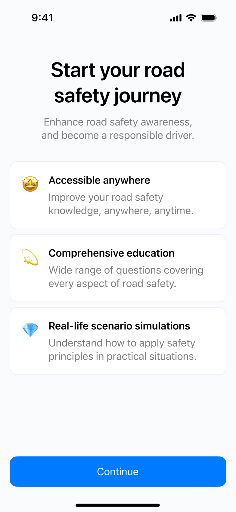

Back to Home
Road Safety Quiz
The Road Safety Quiz app is a comprehensive and engaging learning tool that helps users of all ages improve their road safety knowledge and skills. The app covers a wide range of road safety topics in a clear and concise manner, and it offers a variety of quiz formats that are challenging and thought-provoking. The app also is be visually appealing and easy to navigate. Additionally, the app marketed and promoted as a reliable and trustworthy source of road safety information.
Industry
Education
Type of Work
Mobile App Development
Year
2024

